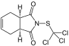

Definition: Captan is a general use pesticide (GUP) that belongs to the phthalimide class of fungicides. It is a white solid, although commercial samples appear yellow or brownish.
Source: Wikipedia
Wikipedia Page
Wikidata Page